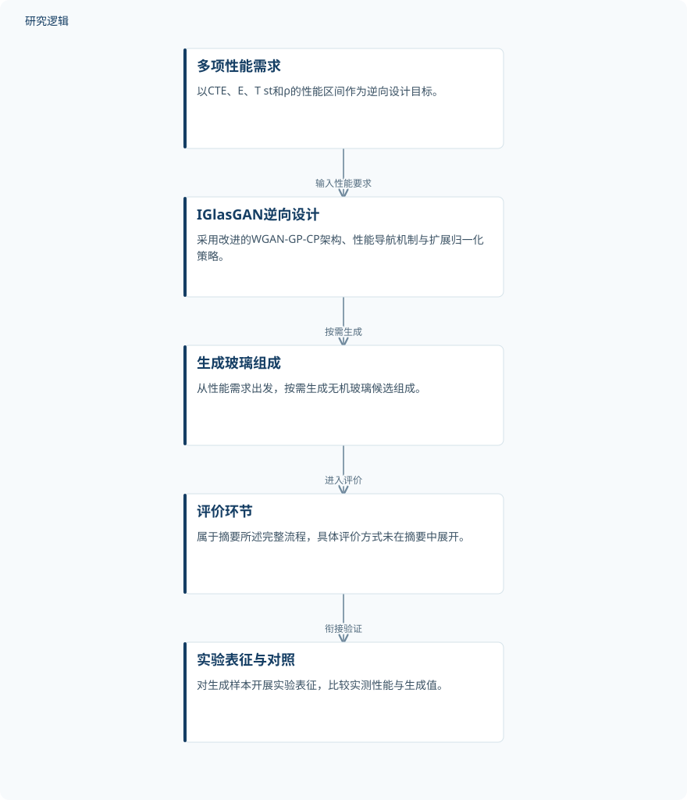

摘要解读
IGlasGAN：基于生成式人工智能的无机玻璃材料逆向设计框架
IGlasGAN: an inverse design framework for inorganic glass materials based on generative artificial intelligence
解读更新 2026-10-16 15:25 · 依据公开摘要整理，未核验全文细节
无机玻璃逆向设计的难点，是让多项耦合性能同时满足要求。IGlasGAN尝试从性能需求直接生成玻璃组成，并通过实验检验生成值，为理解生成式人工智能如何连接材料设计与实测验证提供了具体案例。
文章目录
玻璃设计难在多项性能同时达标
摘要将高效的多目标协同设计列为新型玻璃开发的核心挑战。本文面向OLED基板玻璃，同时考虑热膨胀系数（CTE）、杨氏模量（E）、应变点温度（T st）和密度（ρ），研究重点不是单项性能最优，而是多项性能共同满足指定区间。
训练数据包含2445个实验样本，其中156个完全满足上述四项性能要求。这一数据背景说明，已有样本中包含符合目标的组成，但如何按需求生成候选组成，仍是本文要解决的问题。
从性能区间到组成的生成—评价—验证流程
IGlasGAN基于改进的WGAN-GP-CP架构，引入性能导航机制和扩展归一化策略，在多项耦合性能的箱式约束下开展自动逆向设计。摘要明确描述了从性能需求到玻璃组成的端到端按需设计，以及生成、评价和验证相衔接的完整流程。
除OLED基板玻璃设计外，研究还设置了两个从零设计场景，其目标区域与训练数据分布的距离逐步增大，用于进一步检验生成能力。摘要未展开性能导航、归一化和评价环节的具体实现。
依据摘要整理的IGlasGAN逆向设计流程


示意图仅概括摘要明确描述的性能需求、组成生成及评价验证关系，不是论文原图，也不补充具体实验配置。
下载 SVG图示关系说明
实线表示相邻阶段的信息流，虚线表示跨阶段联系或反馈。
多项性能需求 → IGlasGAN逆向设计：输入性能要求；IGlasGAN逆向设计 → 生成玻璃组成：按需生成；生成玻璃组成 → 评价环节：进入评价；评价环节 → 实验表征与对照：衔接验证
实测总体吻合，但CTE偏差需要单独看
在OLED基板玻璃逆向设计中，研究识别出具有相对较高Y₂O₃含量的新组成。三个场景合计对12个生成样本进行了实验表征；这是摘要报告的实验验证范围，不代表所有生成候选均已获得实测确认。
摘要报告，实测性能与生成值总体吻合：除CTE外，偏差均在±3.50%以内；CTE的最大偏差为13.03%。因此，不能把整体吻合概括为所有性能具有相同精度，CTE应作为理解验证结果时的重点。
验证覆盖面与比较优势仍需查阅全文
仅凭摘要，无法判断训练样本的组成覆盖、数据划分方式，以及实验表征样本在各场景中的分配和筛选依据。摘要也未提供基线模型比较、重复测量或不确定性信息，因此不能据此量化相对其他方法的优势。
目标区域逐步远离训练分布，为考察不同目标设置提供了线索，但摘要未给出距离定义、各场景达标情况或更广泛的适用边界。这些信息在摘要中未报告，不等于论文没有开展相关分析。
阅读启发：分清数值吻合与约束达标
阅读启发：关注生成式逆向设计时，宜区分“生成值与实测值接近”和“实测性能满足全部目标区间”。本文可进一步阅读的重点，是各场景如何判定约束达标、CTE偏差如何影响达标判断，以及性能导航如何支持远离训练分布的目标，而非直接推断其已具备普遍外推能力。
以上为本站阅读启发与建议，不是论文已验证的结论。